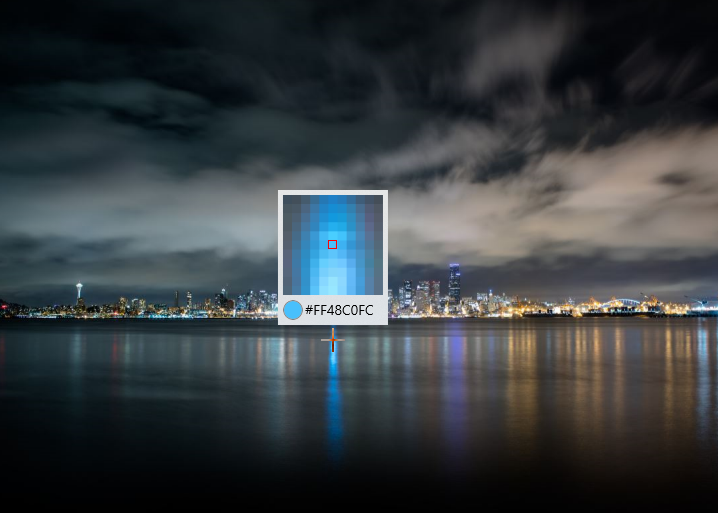

Eyedropper (Archived)
Warning
This document has been archived and the component is not available in the current version of the Windows Community Toolkit.
While there are no immediate plans to port this component to 8.x, the community is welcome to express interest or contribute to its inclusion.
For more information:
Original documentation follows below.
The Eyedropper control can pick up a color from anywhere in your application.
Note
The Eyedropper Control uses RenderTargetBitmap to get a screenshot of your app. In some cases, RenderTargetBitmap may render incorrectly, which will cause eyedropper not to get the correct color value. Please make sure your xaml layout is reasonable, see here for details.
Syntax
Use EyedropperToolButton in xaml.
<Page ...
xmlns:controls="using:Microsoft.Toolkit.Uwp.UI.Controls"/>
<controls:EyedropperToolButton />
</Page>
Or use the global Eyedropper in code.
var eyedropper = new Eyedropper();
var color = await eyedropper.Open();
Dim eyedropper = New Eyedropper()
Dim color = Await eyedropper.Open()
Sample Output

Properties
Eyedropper Properties
| Property | Type | Description |
|---|---|---|
| Color | Color | Gets the current color value. |
| Preview | ImageSource | Gets the enlarged pixelated preview image. |
| WorkArea | Rect | Gets or sets the working area of the eyedropper. |
EyedropperToolButton Properties
| Property | Type | Description |
|---|---|---|
| Color | Color | Gets the current color value. |
| EyedropperEnabled | bool | Gets or sets a value indicating whether eyedropper is opened. |
| EyedropperStyle | Style | Gets or sets a value for the style to use for the eyedropper. |
| TargetElement | FrameworkElement | Gets or sets the working target element of the eyedropper. |
Methods
Eyedropper Methods
| Methods | Return Type | Description |
|---|---|---|
| Open([Point?]) | Task<Color> | Open the eyedropper. |
| Close() | void | Close the eyedropper. |
Events
Eyedropper Events
| Events | Description |
|---|---|
| ColorChanged | Occurs when the Color property has changed. |
| PickStarted | Occurs when the eyedropper begins to take color. |
| PickCompleted | Occurs when the eyedropper stops to take color. |
EyedropperToolButton Events
| Events | Description |
|---|---|
| ColorChanged | Occurs when the Color property has changed. |
| PickStarted | Occurs when the eyedropper begins to take color. |
| PickCompleted | Occurs when the eyedropper stops to take color. |
Examples
- Use the global Eyedropper in code.
var eyedropper = new Eyedropper();
var color = await eyedropper.Open();
Dim eyedropper = New Eyedropper()
Dim color = Await eyedropper.Open()
Sample Project
Eyedropper Sample Page Source. You can see this in action in the Windows Community Toolkit Sample App.
Default Template
Eyedropper XAML File is the XAML template used in the toolkit for the default styling.
Requirements
| Device family | Universal, 10.0.16299.0 or higher |
|---|---|
| Namespace | Microsoft.Toolkit.Uwp.UI.Controls |
| NuGet package | Microsoft.Toolkit.Uwp.UI.Controls |